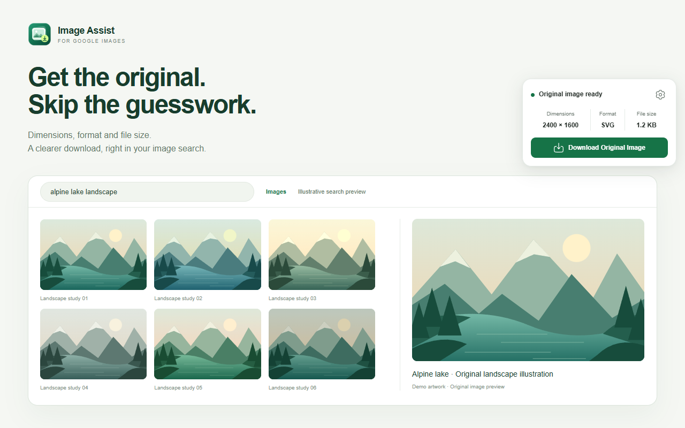

Look beyond the thumbnail
Read dimensions, format and file size from the original image when available. Unverified information stays unknown.
Google's preview isn't always the file you want. Check the original's dimensions, format and file size, then save it with confidence.
Try the button in the preview. This demo does not download files.
Know what is ready, what you are saving, and what you have saved before.
Read dimensions, format and file size from the original image when available. Unverified information stays unknown.
Open your browser's save dialog with the original image URL. Cancelling never triggers a second, silent download.
A green Download Original Image button turns blue and says Download Again after a successful recent download.
Choose any size, large, medium or icon as your search default. Keep explicit size filters and other search tools.
Place the card left or right. Light and dark themes follow your system, and the layout adapts to smaller screens.
Preferences and download checks stay in your browser. Image inspection contacts the original host, not a developer server.

A compact card shows the image's original dimensions, verified format and file size. The waiting indicator disappears as soon as the original is ready.
Screenshots show the actual extension interface in a local demonstration environment.
Download the package for your browser and extract it first. These builds are available directly from GitHub; they are not yet published in browser stores.
chrome://extensions and enable Developer mode.about:debugging#/runtime/this-firefox.manifest.json.Temporary installations end when Firefox closes. Permanent installation in standard Firefox requires Mozilla signing.
The extension matches the original or final image URL against completed downloads started in the last 30 days, including native Save Image As downloads. It uses browser-local download history, not visual recognition. Clearing that history removes the matching indicators. It records a past download, not whether the file is still on disk.
Some hosts block extension requests. If your browser has loaded the original, downloading can still work, but unverified size or format is shown as unavailable. Automatic inspection is limited to 40 MB and an 18-second network timeout.
Image searches at google.com/search using udm=2 or tbm=isch. Country-specific Google domains are not included. Changes to Google's page structure can require an extension update.
No developer-operated analytics or collection endpoint is used. The original image host receives ordinary inspection and download requests. Read the privacy policy for the local storage and download-history behavior.